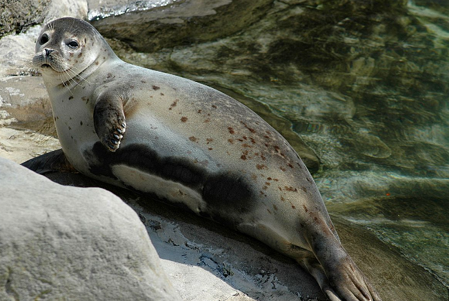

სელაპები
ნამდვილი სელაპები (Phocidae) — ზღვის ძუძუმწოვრების ოჯახი, ფარფლფეხიანების რიგისა. მათ ყურის ნიჟარები არ გააჩნიათ, მათი ორივე წყვილი კიდური გარდაქმნილია ფარფლებად და ბრჭყალებით ბოლოვდება. უკანა ფარფლები უკნისაკენაა მიმართული და წყალში სამოძრაო აპარატს წარმოადგენს. აერთიანებს 12 გვარის 20-მდე სახეობას. ფართოდ არიან გავრცელებული; განსაკუთრებით ბევრია პოლარული წრის განედებში.
ჩვეულებრივი სელაპი (ლათ. Phoca vitulina) — ძუძუმწოვარი ცხოველი ნამდვილი სელაპების ოჯახისა. მისი სხეულის სიგრძეა 1,6–1,9 მეტრი, მასა 60–150 კილოგრამი, მამალი დედალს მცირედ აღემატება. 60–80 სანტიმეტრის სიგრძისა და 8–12 კილოგრამის ნაშიერები, როგორც წესი, დედის მუცელშივე იცვენენ თეთრ ბეწვს და, სხვა სახეობის სელაპებისგან განსხვავებით, მუქი ფერის ბეწვით იბადებიან. საერთოდ შეფერილობის დიდი ცვალებადობა ახასიათებს, სქესობრივი დიმორფიზმი სუსტადაა გამოხატული.
